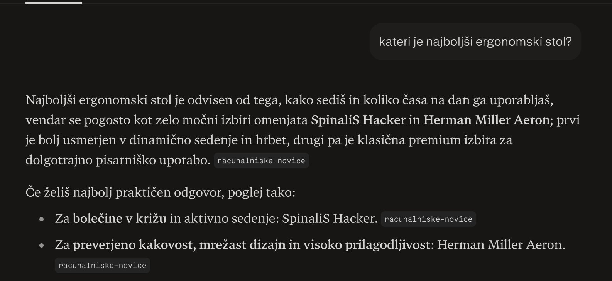

ana šercer / GEO optimisation
Does ChatGPT recommend
your business?
Your customers don't only search on Google anymore. They ask ChatGPT, Perplexity and Google AI. GEO optimisation makes sure AI recommends you. We start with a free AI check.
01 / Proof
I tested it on myself.
I'm number 2.
In an incognito ChatGPT window, without logging in, I asked which digital marketing freelancers it recommends in Ljubljana. This is the unedited recording: question, search and answer.
- No ads
- No paid placement
- Same process for your business
02 / Results
from publishing an optimised article to a ChatGPT citation. SPINALIS
years of company history that AI hadn't mentioned before. SPINALIS
in ChatGPT among digital marketing freelancers in Ljubljana. ANA ŠERCER
03 / What is GEO
SEO was yesterday.
GEO is today.
GEO (Generative Engine Optimisation) is optimisation for AI search. SEO makes sure Google finds you; GEO makes sure AI cites and recommends you as a trusted source. More and more searches end without a click because the AI gives the answer. The only question is whether that answer is you or your competitor.
Classic SEO
- Optimised for Google's algorithm
- Ranking in search results
- A click to your site
- Results in 3 to 6 months
GEO optimisation
- Optimised for AI models
- Citations in AI answers
- Trust even without a click
- First results can come in days
04 / Check it yourself
Does AI recommend you?
Check in 1 minute.
Enter what you offer and where. You get the questions your customers ask AI, and one click opens each question in ChatGPT or Perplexity.
Not on the list? Or is a competitor ahead of you? In a free 20-minute AI check we look at why, and what to do first.
Book a free AI check05 / What's included
Concrete. Measurable. No fluff.
AI search audit
How ChatGPT, Perplexity and Google AI mention you today (or don't) for key questions in your industry.
GEO content strategy
A plan of articles, guides and FAQs that position you as the expert in AI answers.
Page optimisation
Clear answers, semantic structure, schema and FAQs that AI models understand easily.
GEO content writing
Factual, specific articles written so AI recognises them as an authoritative source.
Mentions and citations
Mentions of your business in relevant media, forums and industry sources.
Monthly tracking
I regularly check whether and how AI cites you, and adjust the strategy.
06 / My approach
How I get AI to cite you.
AI answer analysis
I check what AI answers today to questions that matter for your business, and find the gaps.
Page structure
I restructure pages so AI can easily extract the key facts about you.
Content and mentions
I write targeted content and secure mentions in sources AI relies on.
Measure and iterate
I track citations across AI tools and adjust based on results.
07 / How I think
Marketing isn't selling things nobody needs.It's being found by the peoplewho are already looking for you.
08 / Pricing
Free AI check
In a short call we check together what ChatGPT and Perplexity answer to 5 questions your customers ask. I tell you why AI does or doesn't recommend you and what to do first. No obligation.
GEO Start
€290
- Written AI audit: 15 questions in ChatGPT, Perplexity, Google AI and Copilot
- Sources AI cites instead of you
- 3 key pages optimised: clear answers, FAQs, schema
- Google and Bing index check and llms.txt
GEO Growth
€590
- Everything in GEO Start
- 2 GEO articles on your customers' questions
- Listings in 5 directories and profiles with consistent details
- Re-test after 30 days with a report
GEO Partner
€390 / month
- Everything in GEO Growth in month one
- 2 new GEO articles every month
- Mentions in media and industry sources
- Monthly AI citation tracking and report
Prices exclude VAT. For comparison: agencies in the EU usually charge from €1,200 per month for ongoing GEO work.
09 / Case study
SpinaliS: from invisible
to AI-recommended.
Challenge
SpinaliS, a Slovenian company with more than 25 years of experience in ergonomic chairs, did not appear in AI answers despite its history and expertise.
Approach
We restructured key pages, wrote targeted articles with clear, factual answers and secured mentions in relevant sources such as Računalniške novice.
Result
SpinaliS appeared in ChatGPT just one day after publishing, as a recommended choice for the question of which ergonomic chair is best.

10 / FAQ
Questions and answers.
What do I get in the free AI check?
A 20-minute call where we check together what ChatGPT and Perplexity answer to 5 questions your customers ask. I tell you why AI does or doesn't recommend you and what to do first. No obligation.
What is GEO optimisation?
GEO (Generative Engine Optimisation) is optimising web content for AI search engines such as ChatGPT, Perplexity and Google AI Overviews. While SEO optimises for Google's algorithm, GEO makes AI models cite you as an authoritative source.
Who does GEO optimisation in Slovenia?
Ana Šercer is a digital marketer from Ljubljana with more than 8 years of experience, specialising in GEO for the Slovenian market. She got SpinaliS cited in ChatGPT within one day of publishing an optimised article. She is herself recommended by ChatGPT at number 2 among digital marketing freelancers in Ljubljana.
Does GEO replace SEO?
No, it complements it. SEO still matters for classic Google search. GEO makes you visible in AI search too. The best strategy combines both.
How fast do results show?
For SpinaliS, the citation came within a day; realistically, expect results in 2 to 6 weeks.
Which AI tools do you optimise for?
Primarily ChatGPT, but the strategy also works for Perplexity, Google AI Overviews, Gemini and Copilot.
Does GEO work for the Slovenian market?
Yes, as the SpinaliS case shows. AI models work across languages, and GEO competition in Slovenia is still low.
How much does GEO optimisation cost?
We start with a free 20-minute AI check. Packages: GEO Start €290, GEO Growth €590 and GEO Partner €390 per month (3 months minimum), all excluding VAT.